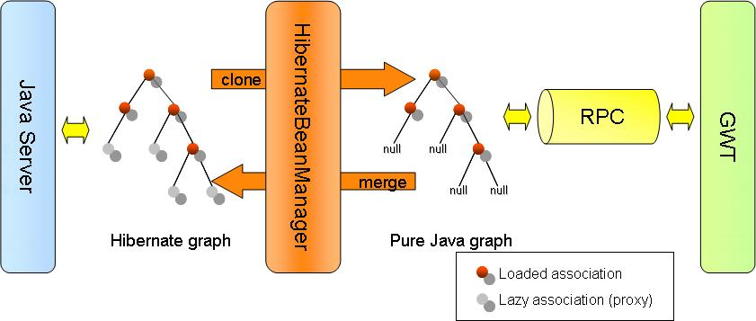

hibernate4gwt
http://hibernate4gwt.sourceforge.net |
hosted by |
|
Introduction This page describes the basic concepts used by hibernate4gwt to handle Hibernate beans and send them outside the JVM, to the GWT client side. Note that you do not need to have a complete understanding of how hibernate4gwt works to use it and the "Getting started" section is sufficient to use it. Clone and merge operationsTo work properly with Hibernate beans, GWT needs them to be real POJO, ie without any instrumented class and basic collection implementations. Removing proxies and replacing persistent collections is the job of the clone operation. Symetrically, Hibernate needs associations to be set with proxies when property was not loaded, and persistence information on collections (for dirty state checking and so on...). Rebuild such instrumented and persistent beans is the goal of the merge operation.  Lazy Properties hibernate4gwt needs to store persistent informations (such as proxies and collections) in order to rebuild the bean properly during the merge operation. Such informations can be stored in two ways :
Proxy generation In some case, none of the two solutions presented above are accpetable : no technical inhéritance is allowed, and the server must remain purely stateless. In order to solved such an issue, the library supports the dynamic proxy mode, which is an extension to the stateless mode. The only difference is that the LazyPojo inheritance is just needed. By using GWT generator for client-side and Javassist on the server one, a symetric proxy is created to handle persistence information by adding the ILazyPojo implementation. In order to make GWT generator work, the model POJO must implement the java.io.Serializable interface. This one acts as a marker for the Proxy generator. Hibernate Bean Manager The HibernateBeanManager class is the heart of the library. It is based on a “Lazy
killer” class and a “POJO store” (see above). The LazyKiller class removes Hibernate proxies, convert persistent collections to their regular counterparts and store lazy properties information for the merge operation. HibernateRemoteServiceOn the top
of all this, the HibernateRemoteService handles the underlying
mechanisms and provides
the following methods:
HibernateRemoteService The HibernateRemoteService overrides the GWT RemoteServiceServlet to seamlessly clone and merge Hibernate POJO before and after method invocation. Basically, HibernateRemoteService overrides the processCall method like this : Service class, for example as following :
Class Mapper The class mapper is used to for cloning and merging from one Domain class to a different one (Java5 class to DTO, or proxy class to Domain) hibernate4gwt currently handles different "class mapping" strategies via the DirectoryClassMapper or ExplicitClassMapper implementations : they generally translate the Domain class name to DTO class name by replacing package name and add a DTO suffix if declared. For particular needs, you can implement your own IClassMapper class, with custom class mapping strategy. |
|
Copyright 2007. All Rights Reserved
|